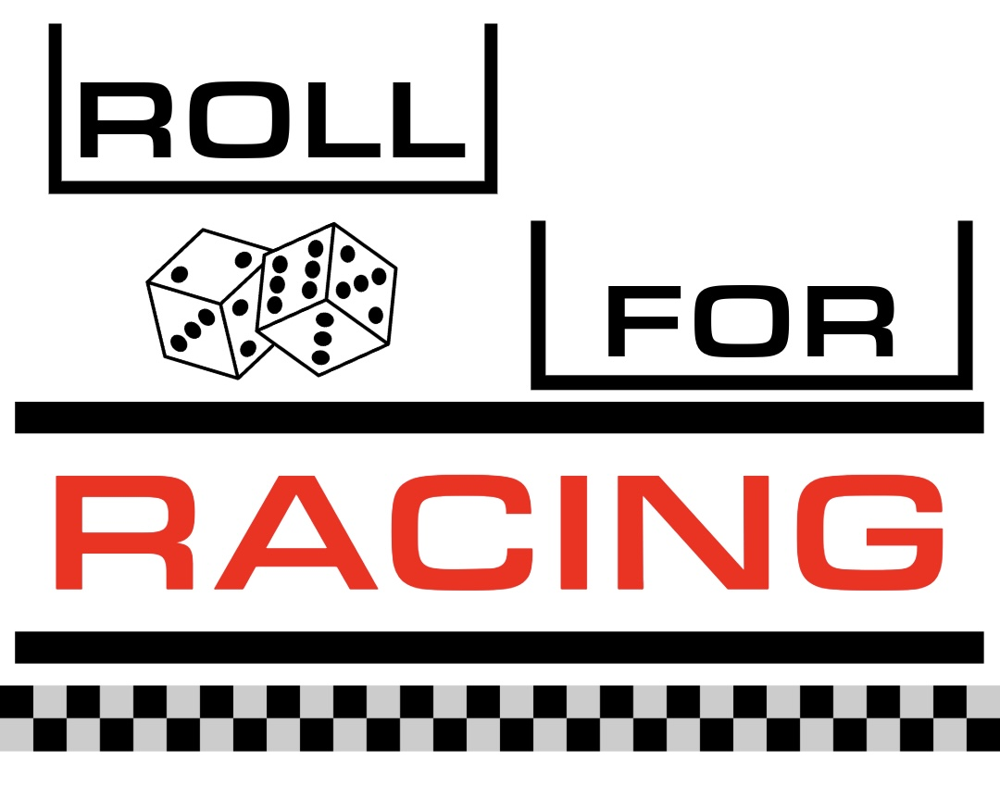

üèÅ Roll for IndyCar
Click the button below to randomly predict which drivers will get a podium finish at the next race.
Random Driver
Roll Driver
—
Selection History
My prediction for the next IndyCar podium: